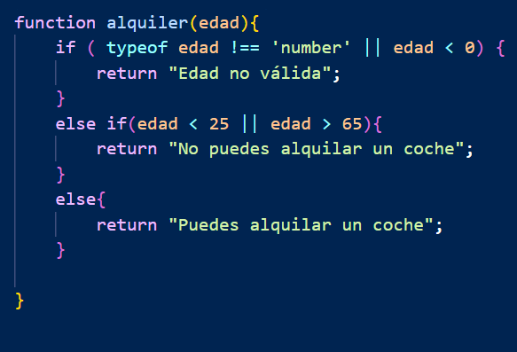
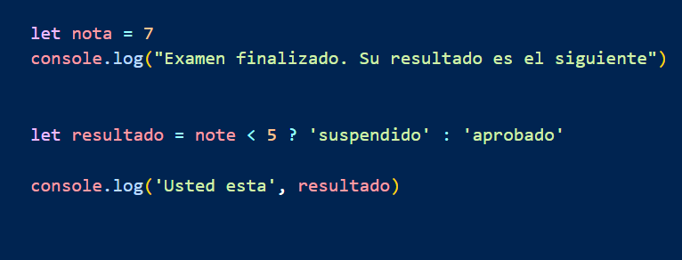
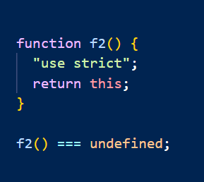

Checkpoint 7
¿Qué diferencia a Javascript de cualquier otro lenguaje de programación?
JavaScript es un lenguaje de programación o de secuencias de comandos que te permite implementar funciones complejas en páginas web, cada vez que una página web hace algo más que sentarse allí y mostrar información estática para que la veas, muestra oportunas actualizaciones de contenido, mapas interactivos, animación de Gráficos 2D/3D, desplazamiento de máquinas reproductoras de vídeo, etc., puedes apostar que probablemente JavaScript está involucrado. Es la tercera capa del pastel de las tecnologías web estándar, dos de las cuales (HTML y CSS) hemos cubierto con mucho más detalle en otras partes del Área de aprendizaje.
El nucleo de lenguaje de JavaScript consta de:
- Almacenar valores útiles dentro de variables.
- Operaciones sobre fragmentos de texto (conocidas como 'strings' en programación). Tomamos la cadena "Player1:" y la unimos a la variable name para crear la etiqueta de texto completa, como por ejemplo ''Player1: Chris"
- Nos permite ejecutar ciertas respuestas en base a ciertos eventos, por ejemplo, podemos detectar cuando se hace click, y hacer que se active algo en base a eso.
Por otra parte, JavaScript nos da un superpoder, y ese superpoder se llama API, o Interfaz de Programación de Aplicaciones, y es una forma de que los programas se comuniquen entre sí, y JavaScript nos permite acceder a esas APIs, y por tanto, acceder a esos datos.
Este ejemplo, podemos verlo por ejemplo, en la aplicación meteorológica, que ella misma no mide ni prepara las previsiones, sino que se comunica con APIs externas que le proporcionan los datos necesarios para mostrar la información del clima en tiempo real. Estas APIs permiten que la aplicación obtenga datos como la temperatura, la humedad, la velocidad del viento, entre otros, y los presente de manera clara y accesible para el usuario.

¿Cuáles son algunos tipos de datos JS?
Los tipos de datos en JavaScript son:
- Number: son, como su nombre indica en inglés, números. Estos pueden abarcar desde números enteros (como 1, 2, 3) hasta números decimales (como 3.14, 0.5). Además, en JavaScript, los números también incluyen valores especiales como Infinity, -Infinity y NaN (Not-a-Number), que se utilizan para representar resultados matemáticos que no son números válidos o que exceden los límites numéricos.
- String: representan cadenas de texto, y pueden ser tanto palabras individuales, frases completas o incluso caracteres especiales. Los strings se definen encerrando el texto entre comillas simples (' '), comillas dobles (" ") o backticks (` `). Además, los strings en JavaScript tienen una amplia variedad de métodos que permiten manipularlos, como concatenarlos, dividirlos, buscar subcadenas, reemplazar texto, entre otros. Por ejemplo, podemos usar el método `.length` para obtener la longitud de un string, o el método `.includes()` para verificar si contiene una subcadena específica.
- Boolean: estos datos se basan en dos valores lógicos, que son True y False. Estos tipos de datos son fundamentales en la programación, ya que se utilizan para tomar decisiones y controlar el flujo de ejecución en base a condiciones. Por ejemplo, en un condicional, un valor booleano puede determinar si se ejecuta un bloque de código o no. Además, los valores booleanos son el resultado de operaciones de comparación, como `5 > 3` (que devuelve True) o `10 === "10"` (que devuelve False). También son esenciales en bucles y estructuras de control, permitiendo evaluar expresiones y decidir si continuar o detener la ejecución.
- Object: representan una colección de valores en el formato clave: valor (key: value). Los objetos son una de las estructuras de datos más importantes en JavaScript, ya que permiten almacenar y organizar datos de manera estructurada. Cada clave dentro de un objeto debe ser única, y puede estar asociada a cualquier tipo de dato, como números, strings, arrays, funciones, o incluso otros objetos. Por ejemplo, un objeto que almacena información de un usuario podría verse así:
- Array: este tipo de datos se utiliza para almacenar múltiples valores en una sola variable, ya sean strings, números, booleanos, objetos, o incluso otros arrays (arrays anidados). Los arrays se definen utilizando corchetes '[]', y los elementos dentro de ellos se separan por comas (,). Los arrays son muy útiles para organizar y manipular datos de manera estructurada, ya que ofrecen métodos y propiedades que permiten realizar operaciones como agregar, eliminar, buscar, ordenar, o recorrer elementos. Por ejemplo, el método `.push()` permite agregar un elemento al final del array, mientras que `.pop()` elimina el último elemento. Además, los arrays son dinámicos, lo que significa que su tamaño puede cambiar durante la ejecución del programa. Un ejemplo de array sería: `let frutas = ['manzana', 'banana', 'naranja'];`.
- Null: este tipo de dato simplemente representa la ausencia intencionada de un valor. Es decir, cuando asignamos `null` a una variable, estamos indicando explícitamente que esa variable no tiene ningún valor en ese momento. Esto es diferente de `undefined`, ya que `undefined` significa que una variable ha sido declarada pero no se le ha asignado ningún valor. Por ejemplo, si tenemos `let variable = null;`, estamos diciendo que la variable existe pero no tiene un valor asignado intencionadamente. Este tipo de dato es útil para inicializar variables que más adelante se llenarán con un valor real o para restablecer el valor de una variable a un estado vacío.
- Undefined: este tipo de dato representa una variable que ha sido declarada, pero no ha sido asignada a ningún valor todavía. En otras palabras, cuando una variable se declara pero no se inicializa, su valor predeterminado es `undefined`. Este tipo de dato es útil para identificar variables que aún no tienen un valor asignado o para verificar si una propiedad de un objeto existe o no. Por ejemplo, si declaramos `let x;`, el valor de `x` será `undefined`. Es importante destacar que `undefined` es diferente de `null`, ya que `null` representa la ausencia intencionada de un valor, mientras que `undefined` indica que el valor no ha sido asignado.
¿Cuáles son las tres funciones de String en JS?
Las funciones de los 'Strings' en JavaScript son una herramienta muy potente y versátil, ya que nos permiten manipular, analizar y modificar los strings de muchas maneras diferentes. Estas funciones son esenciales para trabajar con datos textuales, ya que nos permiten realizar tareas como cambiar el formato, buscar patrones, dividir cadenas, reemplazar texto y mucho más. En este caso, vamos a explorar tres funciones muy útiles que nos permitirán cambiar el formato de los strings, extraer partes específicas de ellos y realizar transformaciones que faciliten su manejo en diferentes contextos. Estas funciones son fundamentales para el desarrollo de aplicaciones dinámicas y para el procesamiento de datos 'String' de manera eficiente y sencilla, evitando errores en nuestros codigos y simplificando el flujo de trabajo y datos.
Esta funcion nos permite cambiar la string de nuestro ejemplo, a mayusculas, con la funncion 'toUpperCase()'.
La segunda funcion que veremos sera la opuesta a la anterior, es decir, que nos permitira cambiar todas las letras a minusculas en nuestro string de ejemplo, y para ello usaremos '.toLowerCase'.
Finalmente, la ultima funcion que veremos sera una funcion interesante en la que tendremos que saber usal el index muy bien, esta funcion es la 'substring()', que nos permite extraer una parte de la string, en este caso, si queremos extraer la palabra "aprendiendo", tendriamos que usar la funcion 'substring(6, 17)', ya que el index empieza desde 0, y la letra "a" de "aprendiendo" es la letra 6, y ademas es importante que el ultimo index acabe justo despues de la letra que queremos, ya que si aba justo en la letra "o", nos devolvera la palabra "aprendiend"o, y no "aprendiendo".
En resumen, los strings en JS son una herramienta muy potente y versatil, y por tanto, es importante aprender a manejarlos bien, ya que nos permitira hacer muchas cosas interesantes con ellos.
Ademas de estas funciones, existen muchas mas, como por ejemplo, la funcion 'split()', que nos permite separar una string en partes, o la funcion 'replace()', que nos permite reemplazar una parte de la string por otra y muchas mas que nos permiten manejar y modificar esas string sin tener que hacerlo a mano o pudiendo cambiar datos entrantes para que sean validos para nuestras varibles o nuestras funciones
¿Qué es un condicional?
Las condicionales en JS son, a fin de cuentas, una manera de tomar decisiones dentro de un bloque de codigo, en base a un 'si' o a un 'no', es deccir, podemos controlar que flujo tomara el codigo, en baso, como el nombre indica, a una condicion o varias.
En otras palabras, las condicionales son una forma de controlar el flujo de un programa, y nos permiten ejecutar diferentes bloques de codigo en base a ciertas condiciones.
Existen varios tipos de condicionales, como el 'if', el 'else', el 'else if', y el 'switch'.
El 'if' es el condicional mas basico, y nos permite ejecutar un bloque de codigo si se cumple una condicion, el 'else' nos permite ejecutar un bloque de codigo si no se cumple la condicion del 'if', y el 'else if' nos permite añadir condiciones adicionales a nuestro bloque de codigo. Por otro lado, el 'switch' es un condicional que nos permite evaluar una expresion y ejecutar un bloque de codigo en base al resultado de esa expresion.
Para poner un ejemplo y poder hacernos una idea, imaginemos que tenemos una web para alquilar un coche, podemos poner varias condiciones seguidas, por ejemolo, que el usuario tenga carnet de conducir, que tenga 25 años o mas, aqui te muestro un ejemplo de ese codigo

En este caso, si el usuario cumple con las condiciones, se le permitira alquilar el coche, de lo contrario, no podra hacerlo.
Aqui podemos ver, tenemos tres condiciones, la primera, vemos que usamos "if", que es como un "si se cumple esto, se hace o se devuelve aquello". en este caso, miramos si lo que nos ha dado el usuario, es un numero y es mayor que 0, y el "y" ese lo escribimos con "&&".
Si no se cumple pasamos a la siguiente condicion, ¿que quiere decir "else if"? Quiere decir, que si no se cunple el if, pasara a un paso intermedio, donde esto querria decir algo como "ademas, si se cumple o no esto, pasa aquello", en este caso quiere decir que si el usuario, o es menor de 25, o es mayor de 65(porque no se puede ser las dos a la vez), no podra alquilar el coche.
Y finalmente, llegamos a la ultima linea, al "else", esto quiere decir, que si no se ha cumplido niguna de las condiciones anteriores se ha cumplido, esta se cumplira, tiene que ser asi ya que si no la funcion daria error. Aqui quiere decir, que si el usuario ha introducido un numero y una edad valida, y ademas tiene mas de 25, y menos de 65, entonces podra alquilar un coche.
En resumen, las condicionales son muy utiles en este tipo de programas, ya que nos permite hacer fluir la informacion o los datos por el codigo, asegurarnos que no haya errores, y ademas, nos permite hacer funciones muy dinamicas y flexibles en nuestro programa
¿Qué es un operador ternario?
Un operador ternario es conocido tambien como operador condicional, es una forma abreviada, que da la psibilidad de expresar un condicional, en una sola linea de codigo, y funciona exactamente como el condicional, es decir, recoge los valores, los pasa ppr las codiciones, y dependiendo de si son 'true' o 'false' devuelve lo que tenga asignado. En resumen, este operador puede condensa un condicional en una sola linea.
Es una alternativa a la tradicional 'if/else', ya que es mucho mas compacta y breve, y en su justa medida hace que el codigo sea mas legible, pero un exceso puede complicarlo.
La sintaxis de un operador ternario es la siguiente : condicion ? valor verdadero : valor falso;
Digamos que vamos a construir un programa que avise a unos estudiantes de su notas, pero sin mostrarle los nummeros, simplemente diciendo si han suspendido o aprobado:
Visto el ejemplo, vemos que es un condicional simple, pero aun asi, tenemos la oportunidad de utilizar un operador ternario, para simplificar ese condicional, y asi hacer el codigo mas breve y mas liviano de analizar y de leer.

Ahora podemos ver como ese condicional que ocupaba multiples lineas, ha sido reducido a una sola linea, que explica simple y llanamente, que si es menos de 5:'suspendido', y si esa condicional no se cumple, entonces esta aprobado.
En resumen, los operadores ternarios son muy eficazes, nos sirven para poder resumir y simplificar los codigos, pero en exceso puede traer mas problemas que beneificios, por eso es importante practicar, y ver cual es el punto en que se puede convertir en exceso
¿Cuál es la diferencia entre una declaración de función y una expresión de función?
La principal diferencia entre la declaracion y la funcion y la expresion de una funcion en Javascript se basa principalmente, en como se define la funcion y cuando se puede usar.
- Declaracion de funcion: la declaracion de funcion define una funcion con un nombre y esta disponible desde el principio, y las principales caracteristicas son, que tiene nombre, puede ser llamada antes de ser declarada y tiene una funcion llamada 'Hoisting', lo que hace que en motor de Javascript la mueva al principio de codigo, pero no se puede asignar a una variable.
- Expresio de función: Esto ocurre cuando se asigna una funcion a una variable, pero esta no recibe 'hoisting', por lo tantto, solo puede usarse una vez ha sido definida. Sus principales caracteristicas son que puede no tener nombre, solo puede ser llamada despues de la asignacion y no se ejecuta automaticamente con hoisting.
¿Qué es la palabra clave "this" en JS?
La palabra 'this' es una palabra que funciona distinto en JavaScript que en otros lenguajes de programacion, ya que en este caso, 'this' hace referencia al objeto global, y no a la funcion o al bloque de codigo donde se encuentra. En otras palabras, 'this' hace referencia al contexto de ejecucion actual, y puede cambiar dependiendo de como se llame a la funcion o al bloque de codigo.
Tambien es verdad, que aun en JavaScript, 'this' puede cambiar dependiendo de como o desde donde se llame, pero lo que no cambia es que el valor de this siempre tiene que ser un objeto.
- Contexto global: si se ejecuta fuera de cualquier funcion, this se refiere al objeto global, pero hay un truco, si en cualquier contexto declaramos globalThis, no importa el contexto, siempre hara mencion al objeto global
- Dentro de una función: si 'this' es declarado dentro de una funcion, pero no se le aplica ningun valor, por defecto el valor de 'this' sera el objeto global, pero si queremos que se quede en el contexto de la funcion tendriamos que darle un valor undefined.

- Cadenas de prototipos: los prototipos son el enlace interno que une un objeto a otro en JavaScript, pero 'this' solo al objeto donde esta el metodo en el que fue llamado.
- Como constructor: cuando se usa con la palabra clave 'new', el 'this' de la funcion constructra se enlaza directamente con de la nueva funcion, a menos que en los resultados de la construccion de retorne un objeto.
- Eventos: cuando la funcion en la que esta el 'this' sea usada como controladora de eventos, su 'this' cambia desde el elemento del evento activado.
En conclusion, 'this' es una palabra clave muy potente y versatil, pero a la vez es un poco confusa, ya que su valor cambia dependiendo de como se use, y de donde se use. Por eso es importante practicar y ver como funciona en cada caso, para poder sacarle el maximo partido a esta palabra y aprender a crear codigos dinamicos y funcionales.